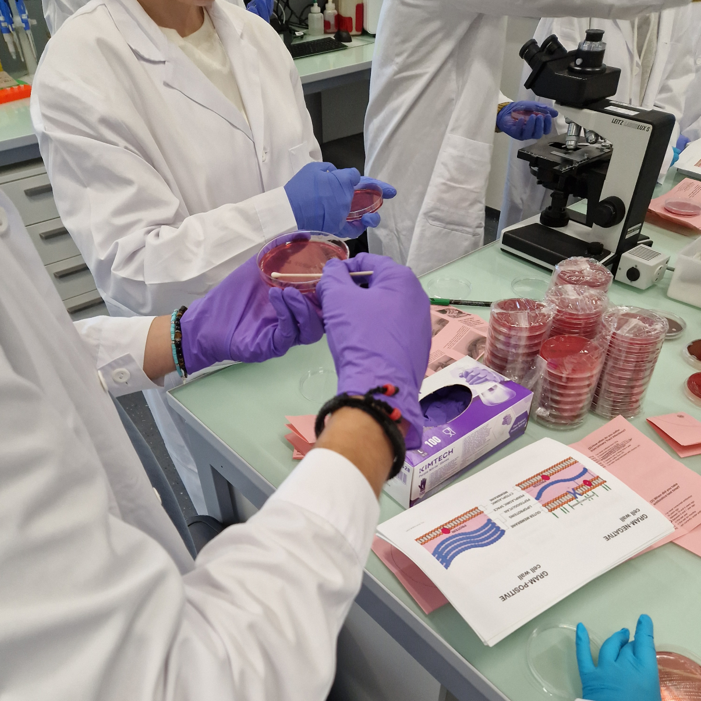

What are antibiotics? How do they work? What does Antimicrobial Resistance mean? Through the
introduction to the scientific protocols and tools in a microbiology laboratory, this workshop proposes
an hands-on experience to learn and discover the science around antimicrobial resistance. Starting from
scientific contents, the activities will engage the participants in the creation of a collaborative
repository of images, resources and stories that will help contributing to the fight against antibiotics
misuses and its consequences. In particular, the workshop is addressed to women who are usually affected
by specific cases of AMR.

with
The workshop is led by the MAKEAWARE! Team, together with Cristina Fragoso Corti. The activity will be hosted by the Applied Microbiology Laboratory at SUPSI. Cristina graduated in Microbiology, from the Faculty of Biotechnology, Catholic University of Porto in 2000. She got a master degree in 2002 from the Institute for Research in Biomedicine in Bellinzona, Switzerland. Since 2012 she is a researcher at the Laboratory of Applied Microbiology at SUPSI where she is involved in teaching and applied research. Her main activities are based on the detection and characterization of microorganisms in samples of different origins to describe their taxonomy, their genetic, metabolic and functional characteristics.
data policy
During the MAKEAWARE! workshops, participants will be asked to collaborate and share personal experiences and stories about antimicrobial and antibiotic resistance, antibiotic consumption, and urinary tract infection diseases and remedies. Different media such as photos, graphics, and texts will be used to document the outputs of the collaboration process. The outputs will be edited or coded and shared via the repository as anonymized open datasets for anyone to use. Learn more about the use of data in the Data Privacy and Management Policy Page.